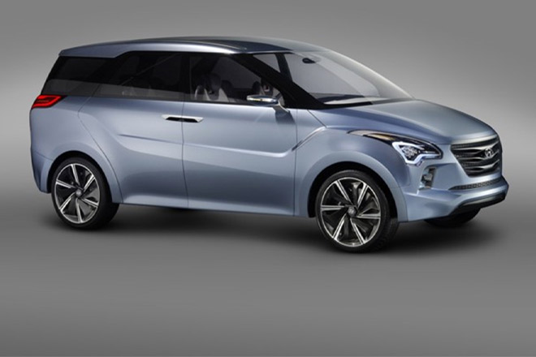
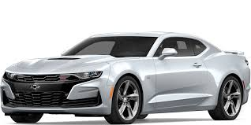
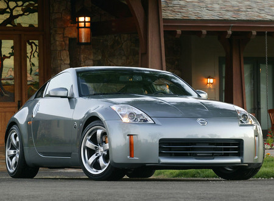

SUSUKI ERTIGA

La productora japonesa presentó a mediados de agosto del 2014, la minivan Suzuki Ertiga, vehículo con propiedades atractivas al ofrecer economía en el consumo de combustible y espacio para el transporte de siete pasajeros. En Perú son dos las versiones disponibles, únicamente diferenciadas por el valor del peso bruto y neto, y – obviamente – la clase de transmisión.
La minivan (GL 1.4 MT & GL 1.4 AT) presenta un motor de cuatro cilindros y sistema VVT de 16 válvulas. El `corazón´ del vehículo de Suzuki, con alimentación por Inyección Multipunto, ejerce un torque de 130 Nm a 4,000 rpm y 94 hp de máxima potencia. Al ser un componente de baja cilindrada y altas rpm en su fuerza, el consumo rentable de combustible está asegurado.
CHEVROLET CAMARO

El Chevrolet Camaro es un auto deportivo producido por el fabricante estadounidense Chevrolet GM. Se clasifica como un pony car y en algunas versiones también como un muscle car. El Camaro surgió como la respuesta de General Motors a su rival más digno durante esta época: el Ford Mustang.
En plena era de los "pony cars", Chevrolet presentó este modelo en dos versiones: el camaro Rally Sport (RS) y el camaro Super Sport (SS). Este último contaba con un V8 de 5.7 litros, y otro motor opcional de 6,5 litros con 396 plgs³, estaban hechos para la clase de cliente estadounidense apasionado por la velocidad, con la idea de "correr en el verano y guardarlo en el invierno", ya que se fabricaba en versión descapotable como en coupé.
nissan 350Z

Es un biplaza con motor central delantero longitudinal y tracción trasera, disponible con carrocerías coupé y descapotable, con caja de cambios manual de seis marchas o automática de cinco marchas. El nombre 350Z proviene de la cilindrada del motor en centilitros.3
Algunos de sus rivales son el Alfa Romeo Brera, el Audi TT, el BMW Z4, el Mazda RX-8, el Honda S2000 y el Mercedes-Benz Clase SLK. El 350Z utiliza la misma plataforma que varios turismos y todoterrenos de Infiniti: el Infiniti G, el Infiniti M y el Infiniti FX. Inicialmente, el único motor es un gasolina 6 cilindros en V y cuatro válvulas por cilindro, denominado VQ35DE. En su lanzamiento, desarrollaba una potencia máxima de 287 HP (214 kW), que luego fue aumentada a 300 HP (224 kW) sacrificándole un poco de bajos al coche y ganándole algo más de revoluciones al corte.